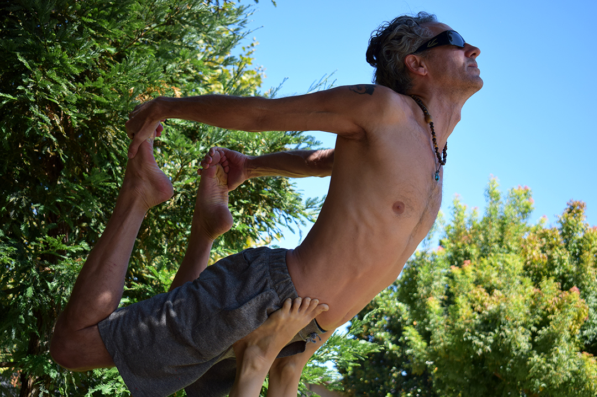

Mindful Movement
An Afternoon of Acro
1 / 11

Every Sunday afternoon at Mitchell Park, yoga instructor and kundalini anchorite conduit Liz Crosby dedicates a piece of the lawn for acroyoga enthusiasts to practice.
2 / 11

Acroyoga is the partner practice of combining yoga, acrobatics and Thai massage. It trains you to master self-control and tune out external stimuli, as the slightest disturbance or shift can knock you off your center.
3 / 11

Fourth year finance major Ernesto Ramirez practices his hand stands with help from yoga instructor Liz Cosby. Ernesto says he joined the acro community “to find a way to relax while still being active at the end of a stressful week.”
4 / 11

Liz and Ernesto excitedly practice their star pose as pat of the #acrovinyasa October challenge, a sequence of thirty poses performed back to back, one for each day of the month.
5 / 11

Spotters Scott and Doug catch Amanda as she falls to of position. “I love welcoming new comers and seeing how excited they get when they're able to hold a new position,” says Scott Larson, Crosby’s right hand man at acro afternoons.
6 / 11
Grant Gilbert, a fourth year physics major and president of the mindfulness club on campus, bases Ernesto in a standing position. Grant gets his homework done early so he can enjoy his Sundays in SLO. “I’ve started going to the Bohi Path for meditation Sunday mornings. I’m grateful this goes on for a few hours in the afternoons so I can come stretch my body after a morning of stretching my mind.”
7 / 11

A member of the group keeps his hands in prayer pose as he holds thrown position in the shade of the trees above him.
8 / 11

Scott Larson holds a sturdy bow pose, stretching his chest and trusting that his base will keep him balanced as he does so.
9 / 11
Molly, another Cal Poly yoga enthusiast guides Grant and Ernesto through the steps of a dynamic move, new to most members of the group. Many look on in amusement as the duo tremble and fall multiple times as they become familiar with one another grips.
10 / 11
Ernesto firmly grips Grant’s arms as they prepare for a second attempt at a sitting to standing flag pose. This time, they were successful!
11 / 11
The first to arrive and the last to leave, Liz Crosby and Scott Larsen continue their practice well into the afternoon. Liz also teaches yoga classes in the Cal Poly recreational center multiple times a week and leads a group of acroyogis every Thursday on Dexter Lawn.